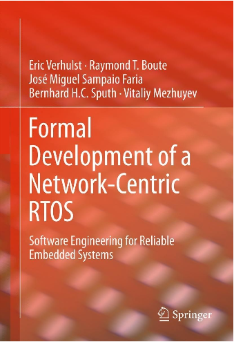

You'll miss a lot on this web site unless you enable Javascript
in your browser.
Introduction [show]
It's hard to find out about the use of TLA+ in industry.
Companies usually don't talk about their engineering process, and any
specifications they write are almost always proprietary. I
happened to have contacts at Intel and Amazon who were willing to
describe how they used TLA+, and Amazon even published a couple of
papers about it. And of course, I know about much of the TLA+ use
at Microsoft. I learned about its use in building OpenComRTOS
after its developers published a book about it. The
Other Use
section below describes a few smaller examples of TLA+ use that I've learned
about.
Intel [show]
TLA+ was first used in industry to model hardware. Hardware engineers
are highly motivated to eliminate bugs, and they understand that this
requires thinking hard about what they're building before they begin
implementing it in silicon.
The early use of TLA+ at Intel is described in this section of a paper, written in 2002. It provides an excellent account of how TLA+ fit into their design process. A picture of TLA+ use in 2008 is provided by the paper: Pre-RTL formal Verification: An Intel ExperienceIt explains how a formal verification (FV) team used TLA+ in a project to design and implement a new cache-coherence protocol for a processor chip. The team validated the protocol and parts of the register transfer language (RTL) implementation. Here is an excerpt from that paper that describes the results of the pre-RTL FV effort. The FV team filed 45TLA+ was still being used at Intel in 2014, but I have no information about what has happened there since then.issuesthat the project used before RTL to track engineering problems requiring special attention to solve. A design lead for one of the verified microarchitectures, when asked for about the FV work, said,They found hundreds of bugs before RTL and played an important role in creating a stable microarchitecture.This microarchitecture had the lowest ratio of bugs per line of RTL even though the unit was new. On RTL and silicon there have been no coherence protocol or architecture feature bugs. In the areas covered by pre-RTL FV, only one microarchitecture bug has been found on silicon, attributed to accepting an unfounded claim that the affected logic would never interact with particular microarchitecture protocols. Amazon [show]
Amazon Web Services (AWS) has been using TLA+ since 2011. In April,
2015, six engineers published an article describing how it was introduced
to AWS and how it was being used there. Here are the
key insightslisted in the article.
Here is what Chris Newcombe, the lead author of the articles, has written elsewhere: TLA+ is the most valuable thing that I've learned in my professional career. It has changed how I work, by giving me an immensely powerful tool to find subtle flaws in system designs. It has changed how I think, by giving me a framework for constructing new kinds of mental-models, by revealing the precise relationship between correctness properties and system designs, and by allowing me to move from `plausible prose' to precise statements much earlier in the software development process. Microsoft [show]
TLA+ was used sporadically at Microsoft beginning around 2004.
Here is one of those uses as reported by the late
Chuck
Thacker.
During the development of the Xbox 360, I was working with the engineering group on the memory coherence protocol. Working with an intern, we were developing a TLA+ model for the protocol. In the course of this, we discovered a very subtle bug. We reported it to IBM, and they told us it couldn't happen. A couple of weeks later, they relented and told us that not only was the bug real, but that their regression tests wouldn't have found it. Had they not fixed it, they would have shipped us chips that would have deadlocked after about four hours of use. Had this [occurred], the schedule for a Christmas launch would almost certainly have been missed.Starting around 2015, use at Microsoft increased—especially in Azure, Microsoft's cloud service. Here are some abridged and lightly edited descriptions of TLA+ use written by members of the Azure team. Some of the TLA+ specifications mentioned were actually written in PlusCal. Albert Greenberg, Corporate Vice President of Azure Networking, writes: Our engineering process moves validation as early as possible in the engineering lifecycle — we strive to detect errors sooner to reduce risk, increase agility, and provide fast feedback to developers. Among the key tools we use is the TLA+ specification language — enabling us to describe our components formally with simple mathematics, with as little overhead as possible beyond what is needed to write the mathematics precisely.Dharma Shukla, Microsoft Technical Fellow, writes this about TLA+ use in Azure Cosmos DB, Microsoft's globally distributed database service: The Cosmos DB engineering team have been using TLA+ for specifying and validating the correctness of the core algorithms as well as the high-level specifications of the five consistency models that the system offers to our customers. We have found TLA+ extremely useful in two fundamental ways:Cheng Huang, Principle Software Engineer Manager, writes: TLA+ uncovered a safety violation even in our most confident implementation. We had a lock-free data structure implementation which was carefully design & implemented, went through thorough code review, and was tested under stress for many days. As a result, we had high confidence about the implementation. We eventually decided to write a TLA+ spec, not to verify correctness, but to allow team members to learn and practice PlusCal. So, when the model checker reported a safety violation, it really caught us by surprise. This experience has become the aha moment for many team members and their de facto testimonial about TLA+. OpenComRTOS [show]
The European Space Agency's Rosetta

spacecraft, which flew to a comet, used a real-time operating system
called Virtuoso to control some of its instruments.
The next version of that operating system, called
OpenComRTOS, was developed using TLA+ as described in this book:
Formal Development of a Network-Centric RTOSEric Verhulst, the head of the group that developed OpenComRTOS, wrote this in an email to me: The [TLA+] abstraction helped a lot in coming to a much cleaner architecture (we witnessed first hand the brain washing done by years of C programming). One of the results was that the code size is about 10x less than [in Virtuoso]. Other Use [show]
I have seen a number of reports of TLA+ (and PlusCal) being used
in real life. Some have been sent to me; some I found by simply
searching the web for
TLA+. Here are a few of them. A web posting titled Model Checking for the Working Man (m/f) by a programmer identified only as Rico describes how he was led to try TLA+ for the first time, and his experience using it. Here is a brief extract. What I was expecting was to wrestle with this for a good couple of days, but actually this tool chain is so easy to get started with, I got our algorith[m] modeled, the problem detected and the solution verified, all within half a day!By TLA+he meant PlusCal. It's not as easy to solve a real problem with TLA+ when you start by knowing nothing about it, and he found TLA+ to be cumbersome. But it's worth learning TLA+ if you're building a complex distributed system. Hacker News has a web page about TLA+. Here is part of a posting on it from 8 July 2015: One of my coworkers fleshed out an important and complex component that absolutely had to be logically correct, by using TLA+ modelling. It was the first time he'd used TLA+ ... at all, and it took a bit of experimenting to get used to it, but he soon generated a solid logical model and exposed a number of fringe flaws in the original proposed solution.In November, 2016, Bogdan Munteanu sent me email describing TLA+ use at Dropbox. Here is an extract from that email. [An] engineer decided to learn/experiment with [TLA+], so I provided some guidance and feedback. He wrote the formal spec for one of our two-phase commit protocols that we knew would fail in certain real-world situations. His spec found the issue ... and the engineer found the process extremely valuable. He mentioned that learning TLA+ was not at all a steep curve — it took him longer to understand the actual protocol.In a TLA+ Google group posting, Hillel Wayne reports this story of a bug in Elastic Search (ES):
|
||